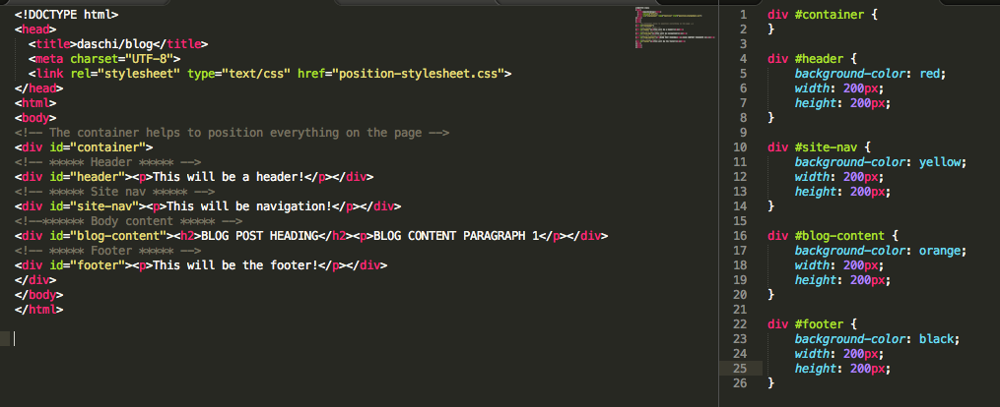
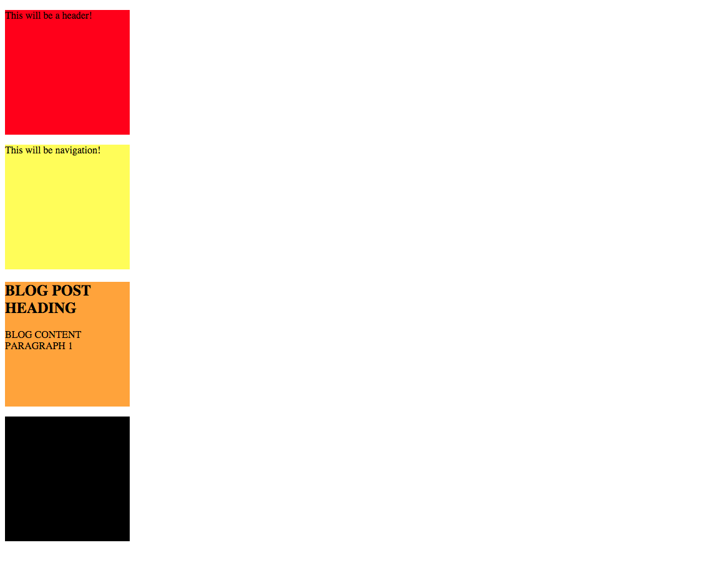
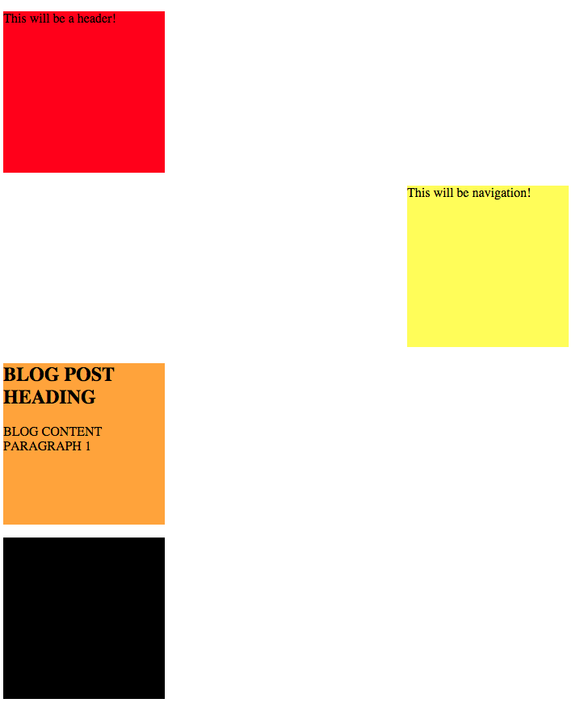
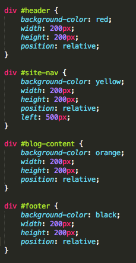
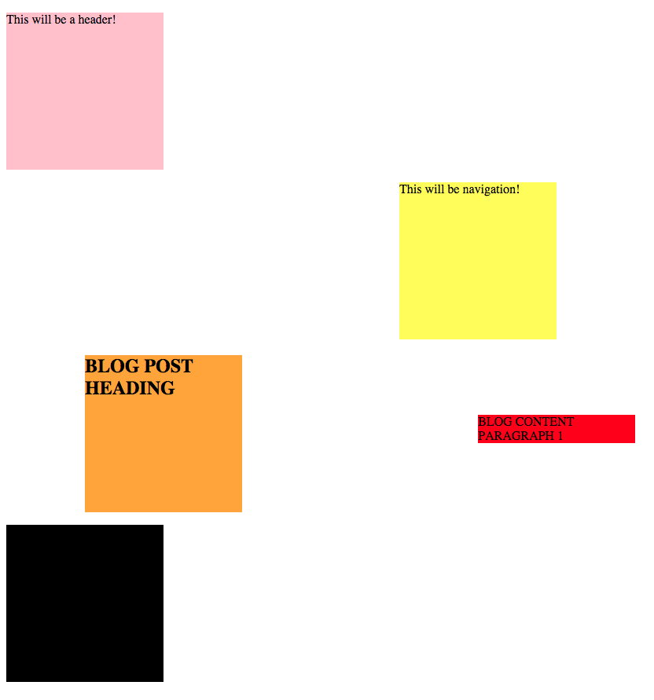
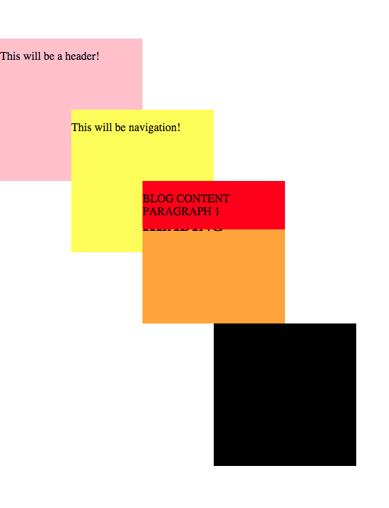
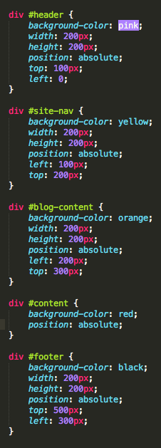
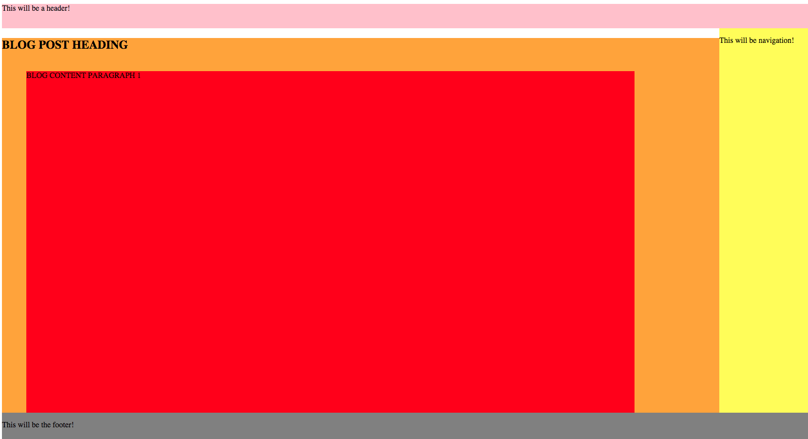
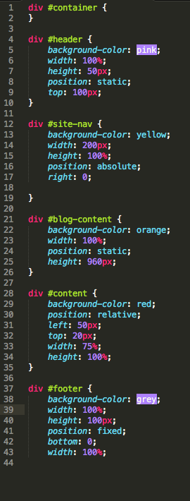

How to Master the Normal Flow of a Web Page
A Look into CSS Position: Static, Fixed, Absolute, Relative
2015-05-10
Introduction
This blog post will focus on the different values of [position] in CSS and how to use them to determine the layout of your web page.
A web page uses HTML (Hypertext Markup Language) to structure the skeleton of a web page's elements and CSS (Cascading Style Sheets) is like the skin, hair and make-up. After typing that I realize it's kind of a creepy analogy, but it works for me so I'm keeping it!
The CSS is written in a different file called a stylesheet, that is then linked to the HTML file. This stylesheet makes all of your HTML elements look the way you want them to, and stylizes them based on the design attributes you apply.
The most challenging part about learning CSS for me was figuring out how to position everything on the page. Anytime I watch a tutorial or read an article on the topic, it seems so EASY and intuitive, and then in practice it takes hours and hours of trial and error. I am writing this post on the position values Absolute, Fixed, Static, and Relative because this is what I've been struggling to understand the most. The key I've found is understanding the normal flow of a web page, and how everything relates directly (or sometimes not at all!) to the elusive normal flow.
This post will be an adventure for me and you! I will test each of these positions and try to eventually create 1 page that uses all of them successfully. My objective is to present the position value's function within the normal flow, and then the reason why you would use it instead of another value (or instead of a float).
Position: Static
[static] is the default value for your element block positions. If you don't change the position value, it will default to static. Static position stacks each block element one on top of the other. You should imagine the web page as a grid, where each HTML element takes up space horizontally on that grid. If you have more than one element, the static position puts them on their own individual line, one under another.
I've created 4 block elements to demonstrate each position, below you'll see a header, site nav, body and footer element without any position specified. This means it appears as static position. Here I've specified width and height. If you don't, the block will span the length of the page automatically.


Static position is good to use when you have elements that need to sit one on top of another, like in a single-column layout. The problem is that static is STATIC. If later on you decide you want to shift an element to the left or right, you'll need to choose a different type of position. Also good to note--the elements within an element set to static, will also be static.
Position: Relative
[relative] positioned elements are very similar to static elements, the difference is there's more flexibility compared to static (hey, it's all relative!) Remember when I said for static that you can't move elements left or right at all? Well, with relative you can! You use the offset properties [top], [right], [bottom] and [left] to "offset" the blocks. The key here is figuring out what you're setting it off of. If you have all your elements set to relative, and the offset one of them, it will not affect the other elements' positions. Check out the image below, I've set the yellow block to offset left by 500px, and everything else is kept relative at 0 offset:


Another interesting feature for the [relative] position is that it let's you offset a block based on the position of its parent element. Take a look at what happens when we move one of the block elements inside another, and apply the same offset:

See what happened? I kept the yellow box offset at 500px and I offset the orange box 100px. These both moved left relative to the page edge. The red box I placed within the orange box's [div] element so it became a child of the orange box. Since it's a child in relative position, the left offset of 500px is then based on the position of the orange box and not the edge of the page. That's why even though both the red box and the yellow box are both left offset by 500px, the red one is further out (the orange box pushed it!).
Position: Absolute
[absolute] position--just as it sounds, can position your elements absolutely where you want them to be, no matter what. An absolute position will take the element OUT of the normal flow and place it where you want it. This leads me to think there's consequences to using absolute, such as losing static or relative elements underneath! The Absolute position will cover anything that is in its way, and will not shift it to another position, so be careful of that! You can understand this as a block that won't affect or be affected by any other element. In order to get the most out of your absolute position, use the [top], [bottom], [left], and [right] properties. Just like in relative--offset boxes are in relation to the parent element.
Look at the image--here you'll see 2 things, all the boxes are absolutely placed on the page, and the red box (child of the orange box) moves with the orange box. You can see this in the CSS, since the red box does not have any top or left offset specified:


Position: Fixed
The fixed position is very similar to absolute except that it stays put no matter what you move on the web page. For example, a footer in the fixed position at the bottom of the page will always be visible and present. Other elements move behind a fixed element. Note, fixed position is not always supported in older browsers!
All positions at once!
Now, here's an example where I used each of these positions in one page to see how they work together.

